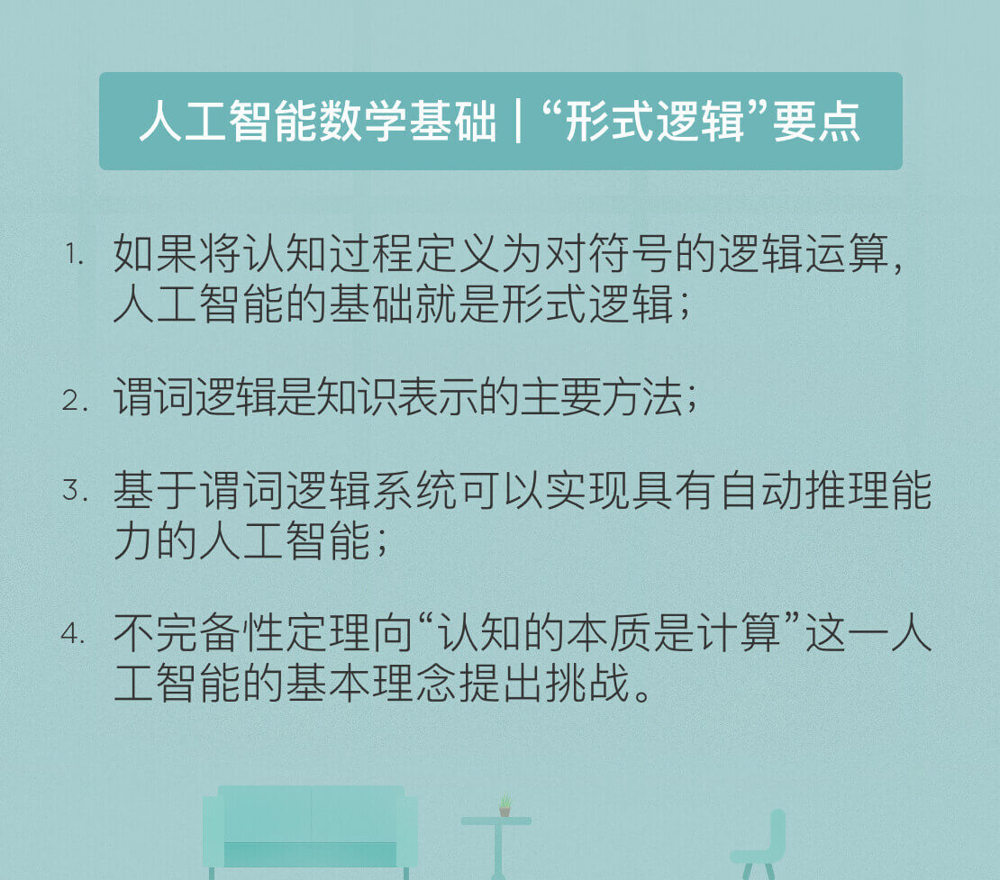

- 00 开篇词 人工智能：新时代的必修课.md.html
- 01 数学基础 九层之台，起于累土：线性代数.md.html
- 02 数学基础 月有阴晴圆缺，此事古难全：概率论.md.html
- 03 数学基础 窥一斑而知全豹：数理统计.md.html
- 04 数学基础 不畏浮云遮望眼：最优化方法.md.html
- 05 数学基础 万物皆数，信息亦然：信息论.md.html
- 06 数学基础 明日黄花迹难寻：形式逻辑.md.html
- 07 机器学习 数山有路，学海无涯：机器学习概论.md.html
- 08 机器学习 简约而不简单：线性回归.md.html
- 09 机器学习 大道至简：朴素贝叶斯方法.md.html
- 10 机器学习 衍化至繁：逻辑回归.md.html
- 11 机器学习 步步为营，有章可循：决策树.md.html
- 12 机器学习 穷则变，变则通：支持向量机.md.html
- 13 机器学习 三个臭皮匠，赛过诸葛亮：集成学习.md.html
- 14 机器学习 物以类聚，人以群分：聚类分析.md.html
- 15 机器学习 好钢用在刀刃上：降维学习.md.html
- 16 人工神经网络 道法自然，久藏玄冥：神经网络的生理学背景.md.html
- 17 人工神经网络 一个青年才俊的意外死亡：神经元与感知器.md.html
- 18 人工神经网络 左手信号，右手误差：多层感知器.md.html
- 19 人工神经网络 各人自扫门前雪：径向基函数神经网络.md.html
- 20 人工神经网络 看不见的手：自组织特征映射.md.html
- 21 人工神经网络 水无至清，人莫至察：模糊神经网络.md.html
- 22 深度学习 空山鸣响，静水流深：深度学习概述.md.html
- 23 深度学习 前方有路，未来可期：深度前馈网络.md.html
- 24 深度学习 小树不修不直溜：深度学习中的正则化.md.html
- 25 深度学习 玉不琢不成器：深度学习中的优化.md.html
- 26 深度学习 空竹里的秘密：自编码器.md.html
- 27 深度学习 困知勉行者勇：深度强化学习.md.html
- 28 深度学习框架下的神经网络 枯木逢春：深度信念网络.md.html
- 29 深度学习框架下的神经网络 见微知著：卷积神经网络.md.html
- 30 深度学习框架下的神经网络 昨日重现：循环神经网络.md.html
- 31 深度学习框架下的神经网络 左右互搏：生成式对抗网络.md.html
- 32 深度学习框架下的神经网络 三重门：长短期记忆网络.md.html
- 33 深度学习之外的人工智能 一图胜千言：概率图模型.md.html
- 34 深度学习之外的人工智能 乌合之众的逆袭：集群智能.md.html
- 35 深度学习之外的人工智能 授人以鱼不如授人以渔：迁移学习.md.html
- 36 深度学习之外的人工智能 滴水藏海：知识图谱.md.html
- 37 应用场景 你是我的眼：计算机视觉.md.html
- 38 应用场景 嘿, Siri：语音处理.md.html
- 39 应用场景 心有灵犀一点通：对话系统.md.html
- 40 应用场景 数字巴别塔：机器翻译.md.html
- 一键到达 人工神经网络复习课.md.html
- 一键到达 应用场景复习课.md.html
- 一键到达 数学基础复习课.md.html
- 一键到达 机器学习复习课.md.html
- 一键到达 深度学习之外的人工智能复习课.md.html
- 一键到达 深度学习复习课.md.html
- 一键到达 深度学习框架下的神经网络复习课.md.html
- 推荐阅读 我与人工智能的故事.md.html
- 新书 《裂变：秒懂人工智能的基础课》.md.html
- 直播回顾 机器学习必备的数学基础.md.html
- 第2季回归 这次我们来聊聊机器学习.md.html
- 结课 溯洄从之，道阻且长.md.html
- 课外谈 “人工智能基础课”之二三闲话.md.html
- （课外辅导）人工神经网络 拓展阅读参考书.md.html
- （课外辅导）数学基础 拓展阅读参考书.md.html
- （课外辅导）机器学习 拓展阅读参考书.md.html
- （课外辅导）深度学习 拓展阅读参考书.md.html
- 捐赠
06 数学基础 明日黄花迹难寻：形式逻辑
1956年召开的达特茅斯会议宣告了人工智能的诞生。在人工智能的襁褓期，各位奠基者们，包括约翰·麦卡锡、赫伯特·西蒙、马文·明斯基等未来的图灵奖得主，他们的愿景是让“具备抽象思考能力的程序解释合成的物质如何能够拥有人类的心智”。
通俗地说，理想的人工智能应该具备抽象意义上的学习、推理与归纳能力，其通用性将远远强于解决国际象棋或是围棋这些具体问题的算法。
要实现这样的人工智能，不可或缺的基础是形式逻辑。人工智能的早期研究者认为人类认知和思维的基本单元是符号，而认知过程就是对符号的逻辑运算，这样一来，人类抽象的逻辑思维就可以通过计算机中逻辑门的运算模拟，进而实现机械化的人类认知。
反过来，形式逻辑也是智能行为的描述方式，任何能够将某些物理模式或符号转化成其他模式或符号的系统都有可能产生智能的行为，也就是人工智能。
人工智能能够模拟智能行为的基础是具有知识，但知识本身也是抽象的概念，需要用计算机能够理解的方式表示出来。
在人工智能中，常用的知识表示方法包括数据结构和处理算法。数据结构用于静态存储待解决的问题、问题的中间解答、问题的最终解答以及解答中涉及的知识；处理算法则用于在已有问题和知识之间进行动态交互，两者共同构成完整的知识表示体系。
在人工智能的研究中，用形式逻辑实现知识表示是一种普遍的方法。形式逻辑可谓包罗万象，其最简单的实例就是由古希腊哲学家亚里士多德提出并流传至今的三段论，它由两个前提和一个结论构成：
- 科学是不断发展的；
- 人工智能是科学；
- 所以，人工智能是不断发展的。
亚里士多德的贡献不仅在于证明了人工智能的不断发展，更在于确定了在大前提和小前提的基础上推导出一个结论的形式化过程，这个过程完全摆脱了内容的限制。由此诞生的符号推理给数理逻辑的研究带来了深远的影响。
在人工智能中应用的主要是一阶谓词逻辑。谓词逻辑是最基本的逻辑系统，也是形式逻辑的根本部分。谓词逻辑的一个特例是命题逻辑。在命题逻辑中，命题是逻辑处理的基本单位，只能对其真伪做出判断。
但命题这种表示法的局限性在于无法把其描述对象的结构及逻辑特征反映出来，也不能体现出不同事物的共同特征。假如单独给定命题“老李是小李的父亲”，在没有上下文时就无法确定老李和小李之间的关系，这个命题的真伪也就没有意义。
为了扩展形式逻辑的表示能力，在命题逻辑的基础上又诞生了谓词逻辑。谓词逻辑将命题拆分为个体词、谓词和量词，三者的意义如下：
- 个体词是可以独立存在的具体或抽象的描述对象，比如前文例子中的“老李”和“小李”；
- 谓词用于描述个体词的属性与相互关系，比如前文例子中的“是…的父亲”；
- 量词用于描述个体词的数量关系，包括全称量词\(\\forall\) 和存在量词\(\\exists\)。
以上三种元素可以共同构成命题。不同的命题之间则可以用逻辑联结词建立联系，由简单命题形成复合命题。按照优先级由高到低排列，逻辑联结词包括以下五种。
- 否定(\(\\neg\))：复合命题\(\\neg P\)表示否定命题P的真值的命题，即“非P” 。
- 合取(\(\\wedge\))：复合命题\(P \\wedge Q\)表示命题P和命题Q的合取，即“P且Q”。
- 析取(\(\\vee\))：复合命题\(P \\vee Q\)表示命题P或命题Q的析取，即“P或Q”。
- 蕴涵(\(\\to\))：复合命题\(P \\to Q\)表示命题P是命题Q的条件，即“如果P，那么Q”。
- 等价(\(\\leftrightarrow\))：复合命题\(P \\leftrightarrow Q\)表示命题P和命题Q相互蕴涵，即“如果P，那么Q且如果Q，那么P”。
在谓词逻辑中出现的不只有常量符号，变量符号也是合法的，同时还可以出现函数符号。变量和函数的引入拓展了谓词逻辑的表示范围，也提升了其普适性。谓词逻辑既可以用于表示事物的概念、状态、属性等事实性知识，也可以用于表示事物间具有确定因果关系的规则性知识。
事实性知识通常使用析取与合取符号连接起来的谓词公式表示，规则性知识则通常使用由蕴涵符号连接起来的谓词公式来表示。在一般意义上，使用谓词逻辑进行知识表示的步骤如下：
- 定义谓词及个体，确定每个谓词及每个个体的确切含义；
- 根据所要表达的事物或概念，为每个谓词中的变量赋以特定的值；
- 根据所要表达的知识的语义，用适当的逻辑联结词将各个谓词连接起来。
经过以上步骤的处理后，抽象意义上的知识就能够转化为计算机可以识别并处理的数据结构。
例如，如果要使用谓词逻辑对“所有自然数都是大于零的整数”进行知识表示，首先要将所有关系定义为相应的谓词。谓词N(x)表示x是自然数，P(x)表示x大于零，I(x)表示x是整数，再将这些谓词按照语义进行连接就可以得到谓词公式：
\[ (\\forall x)(N(x) \\to P(x) \\wedge I(x)) \]
使用形式逻辑进行知识表示只是手段，其目的是让人工智能在知识的基础上实现自动化的推理、归纳与演绎，以得到新结论与新知识。就现阶段而言，人类智能与人工智能的主要区别就体现在推理能力上。
人类的判断方式绝非一头扎进浩如烟海的数据中学习，而是基于少量数据的特征进行归纳与推理，以得出的一般性规律作为判断的基础。在数字图像中稍微添加一点干扰就可以让神经网络将海龟误认为步枪，这点伎俩却不能欺骗具有思考能力的人类，其原因也在于此。
人工智能实现自动推理的基础是产生式系统。产生式系统以产生式的规则描述符号串来替代运算，把推理和行为的过程用产生式规则表示，其机制类似人类的认知过程，因而被早年间大多数专家系统所使用。
产生式规则通常用于表示事物之间的因果关系，其基本形式为\(P \\to Q\)。它既可以用来表示在前提P下得到结论Q，也可以表示在条件P下实施动作Q。这里的P称为规则前件，它既可以是简单条件，也可以是由多个简单条件通过联结词形成的复合条件；Q则称为规则后件。
当一组产生式规则相互配合、协同作用时，一个产生式规则生成的结论就可以为另一个产生式规则作为已知的前提或条件使用，以进一步解决更加复杂的问题，这样的系统就是产生式系统。
一般说来，产生式系统包括规则库、事实库和推理机三个基本部分。
规则库是专家系统的核心与基础，存储着以产生式形式表示的规则集合，其中规则的完整性、准确性和合理性都将对系统性能产生直接的影响。
事实库存储的是输入事实、中间结果与最终结果，当规则库中的某条产生式的前提可与事实库中的某些已知事实匹配时，该产生式就被激活，其结论也就可以作为已知事实存储在事实库中。
推理机则是用于控制和协调规则库与事实库运行的程序，包括了推理方式和控制策略。
具体而言，推理的方式可以分为三种：正向推理、反向推理和双向推理。
正向推理采用的是自底向上的方式，即从已知事实出发，通过在规则库中不断选择匹配的规则前件，得到匹配规则的后件，进而推演出目标结论。
反向推理采用的是自顶向下的方式，即从目标假设出发，通过不断用规则库中规则的后件与已知事实匹配，选择出匹配的规则前件，进而回溯已知事实。
双向推理则是综合利用正向推理和反向推理，使推理从自顶向下和自底向上两个方向进行，直到在某个中间点汇合，这种方式具有更高的效率。
自动推理虽然在数学定理的证明上显示出强大的能力，可解决日常生活中的问题时却远远谈不上智能，其原因在于常识的缺失。对于人类而言，常识的建立是通过社会化的成长过程实现的。
可计算机没办法像人类一样在成长中达成理解，因而常识这一智能的先决条件只能以形式化的方式被灌输到硬盘与内存之中。这要求将一般成年人的知识和信念进行显式的表达，并加以灵活的组织和运用。
可几乎尽人皆知的是，对常识性知识的表达和组织存在着难以想象的困难。从“张三捡起足球”和“张三在运动场上”这两个命题推断出“足球在运动场上”对人工智能来说就已经不可想象，更不用说道德观世界观这些复杂概念。
没有对常识和信念的清晰表达，人工智能就必然陷入混乱的泥沼而无法自拔，获得通用性和适应性较强的智能行为也只能是痴人说梦。
谈论人工智能中的形式逻辑，最终的不可回避的本质问题在于哥德尔不完备性定理。
1900年，德国数学家大卫·希尔伯特在巴黎国际数学家代表大会上提出了20世纪23个最重要的数学问题，其中的第二问题便是算术公理系统的无矛盾性。
1931年，奥地利数学家库尔特·哥德尔对这个问题给出了否定的答案，即第一不完备性定理：
\[\\text{在任何包含初等数论的形式系统中，}\]
\[\\text{都必定存在一个不可判定命题。} \]
通过这个定理，哥德尔证明了公理化系统的阿喀琉斯之踵在于对自指的无能为力，下面的语句就是个典型的自指语句：
\[ \\text{本数学命题不可以被证明。} \]
首先，这个数学命题所讨论的对象不是别的，恰恰是它自己。“本数学命题”就是对整个命题的指代。其次，该命题给出了一个逻辑判断，即这条命题是不可以被证明的。
哥德尔证明了这个命题既不能被证实也不能被证伪，无情戳破了数学公理化系统同时具备一致性和完备性的黄粱一梦。
不完备性定理对人工智能的影响在于对“认知的本质是计算”这一理论基础的理解。从“认知即计算”的角度出发，基于计算机的人工智能如果想要达到近似人类的思维能力，也必须建立起“自我”的概念，这就无疑会导致自指的出现，也将成为不完备性定理的活靶子。
如果计算机能在运算中制造出一个代表自身的符号，那么哥德尔制造悖论的方式就可以在计算机中造出不可证实也不可证伪的飘渺幻境。
在哥德尔不完备性定理的阴影下，基于图灵可计算概念的“认知可计算主义”研究纲领已经显示出其极大的局限。今天，依靠人工神经网络逐渐崛起的连接主义学派大放异彩，与此同时，以形式逻辑为依据的符号主义学派则已经走向没落。
但抛开学术路径的不同，人类智能与人工智能的本质区别到底在哪里，也许这才是不完备性定理留给我们的最大谜团。
今天我和你分享了人工智能必备的形式逻辑基础，以及采用形式逻辑进行自动推理的基本原理，其要点如下：
- 如果将认知过程定义为对符号的逻辑运算，人工智能的基础就是形式逻辑；
- 谓词逻辑是知识表示的主要方法；
- 基于谓词逻辑系统可以实现具有自动推理能力的人工智能；
- 不完备性定理向“认知的本质是计算”这一人工智能的基本理念提出挑战。
虽然问题多多，但符号主义的思路依然是更接近于人类认知的思路。对形式逻辑的处理能否成为未来依赖小数据学习的人工智能的核心技术呢？
欢迎发表你的观点。

© 2019 - 2023 Liangliang Lee. Powered by gin and hexo-theme-book.